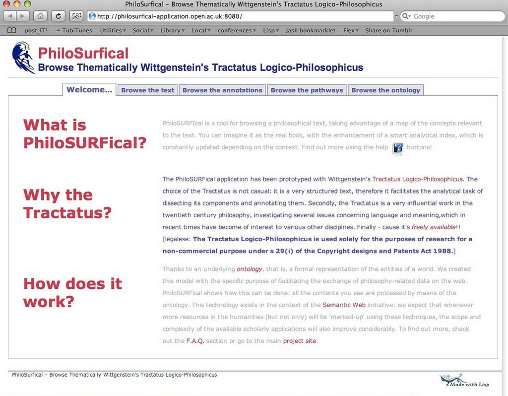
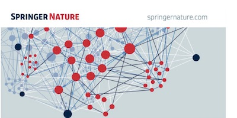
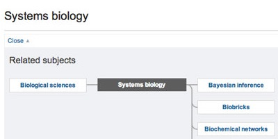

Projects / all / digital-humanities / semantic-web / website
PhiloSURFical
PhiloSURFical: an e-learning web application for enhanced browsing of a semantically-encoded version of a classic text in twentieth century philosophy, Wittgenstein's Tractatus Logico-Philosophicus.
- Years
- 2004–2008
- Status
- Completed
- Role
- Project creation; project management; system analysis and design; web application development.

PhiloSURFical is an ontology-based software for browsing a philosophical text, taking advantage of a map of the concepts relevant to the text. The PhiloSURFical application was prototyped with Wittgenstein's Tractatus Logico-Philosophicus and it allows the navigation of a semantically enhanced version of the text.
I developed PhiloSurfical as part of my PhD dissertation at the Knowledge Media Institute, Open University, UK.
By relying on an ontology created to describe the philosophical domain at various levels of abstraction, users can benefit from multiple perspectives on the text and on related resources.
The papers section of this website contains several articles about this work, but mostly, you should look at this article on Synthese for an in-depth discussion of the ontology, and this book chapter for a more e-learning perspective.
The PhiloSURFical Ontology
The PhiloSURFical ontology characterizes the multiple dimensions of the philosophical domain at a high level of abstraction, thus facilitating reasoning and data integration tasks in cultural informatics applications. The ontology contains classes and relations modeling concepts related to both the factual (eg. events) and theoretical (eg., ideas) dimensions of philosophy. It has been constructed as an extension of the CIDOC-CRM ISO standard.
In particular, the ontology was constructed so to support philosophy students in understanding key aspects of the discipline’s discourse. This is achieved by means of a pathway creation process, i.e., an approach that gives students the means for actively contextualizing the resources they have found so to better analyze and interpret them in the light of the multiple roles they play in the world of philosophy.
For example, some of the learning pathways which inspired the design of the ontology are:
- the critical explanation of a theory (a meta-historical learning path that highlights the opposing theories, and the problems on which they are focused),
- the historical contextualization of a theory (a learning path that shows associated information about an author, or the historical period, or other contemporary important theories in different research areas),
- the description of the whole body of work of an author (a learning path that recollects all the activities and results of an author, and organizes them according to the user’s preferences),
- the intellectual lineage of a concept/theory (a learning path that follows the influence of ideas throughout the history of thought, across different areas and historical periods).
Find below a few diagrams of the entities and relations the ontology represents; much more information about this research work can be found in the papers section of this website.
Aug 2026
The text and concept annotation data is now available as RDF.
See also the project: wittgensteiniana
Technology
- Common Lisp (LispWorks)
- Ontology extending CIDOC-CRM
- RDF
Screenshots 11
Writing about it 15
- Ontological Requirements for Annotation and Navigation of Philosophical Resources
- How do philosophers think their own discipline? Reports from a knowledge elicitation experiment
- Semantic Technologies for ELearning: A case study in the philosophical domain: representing Wittgenstein's Tractatus Logico-Philosophicus
- PhiloSURFical: An Ontological Approach To Support Philosophy Learning
- Ontological Requirement for Supporting Smart Navigation of Philosophical Resources
- Formalizing ʻphilosophicalʼ narratives: the tension between form and content
- Approach and ontology in PhiloSURFical
- New PhiloSURFical version!
- Capturing Knowledge About Philosophy
- PhiloSURFical: browse Wittgensteinʼs Tractatus with the Semantic Web
- Supporting Philosophers’ Work through the Semantic Web: Ontological Issues
- An ontology for the description and navigation through philosophical resources
- Paving the way towards the e-humanities: a Semantic Web approach to support the learning of philosophy
- Semantic Learning Narratives
- Using the Semantic Web to Navigate Conceptual Spaces: an Application for the Philosophical Domain
Related projects

Springer Nature SciGraph
2016–2019

Nature Subject Pages
2013–2014